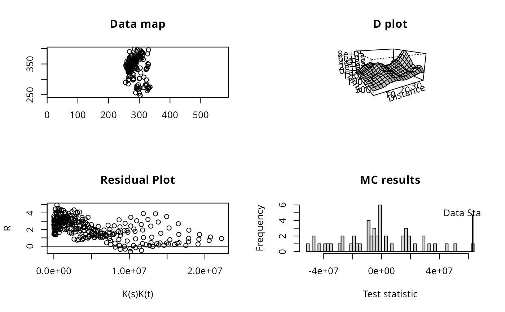

stdiagn.RdProduces some summary plots for clustering analysis
stdiagn(pts, stkh, stse, stmc=0,Dzero=FALSE)A set of points, as used in Splancs
An object returned from stkhat
An object returned from stsecal
An object returned from stmctest
FALSE - default D plot, TRUE Dzero plot
Four plots are produced on the current graphics device. The first plot is simply a map of the data. The second is a perspective plot of the difference between space-time K-function and the product of spatial and temporal K-functions. The third plot is of the standardised residuals against the product of spatial and temporal K-functions. If the Monte-Carlo data is given the fourth plot is a a histogram of the test statistics, with the value for the data indicated with a vertical line. See Diggle, Chetwynd, Haggkvist, and Morris (1995) for details.
Diggle, P., Chetwynd, A., Haggkvist, R. and Morris, S. 1995 Second-order analysis of space-time clustering. Statistical Methods in Medical Research, 4, 124-136;Bailey, T. C. and Gatrell, A. C. 1995, Interactive spatial data analysis. Longman, Harlow, pp. 122-125; Rowlingson, B. and Diggle, P. 1993 Splancs: spatial point pattern analysis code in S-Plus. Computers and Geosciences, 19, 627-655; the original sources can be accessed at: https://www.maths.lancs.ac.uk/~rowlings/Splancs/. See also Bivand, R. and Gebhardt, A. 2000 Implementing functions for spatial statistical analysis using the R language. Journal of Geographical Systems, 2, 307-317.
example(stkhat)
#>
#> stkhat> data(burkitt)
#>
#> stkhat> bur1 <- stkhat(burpts, burkitt$t, burbdy, c(400, 5800),
#> stkhat+ seq(1,40,2), seq(100, 1500, 100))
#>
#> stkhat> oldpar <- par(mfrow=c(2,1))
#>
#> stkhat> plot(bur1$s, bur1$ks, type="l", xlab="distance", ylab="Estimated K",
#> stkhat+ main="spatial K function")
#>
#> stkhat> plot(bur1$t, bur1$kt, type="l", xlab="time", ylab="Estimated K",
#> stkhat+ main="temporal K function")
#>
#> stkhat> par(oldpar)
example(stsecal)
#>
#> stsecl> example(stkhat)
#>
#> stkhat> data(burkitt)
#>
#> stkhat> bur1 <- stkhat(burpts, burkitt$t, burbdy, c(400, 5800),
#> stkhat+ seq(1,40,2), seq(100, 1500, 100))
#>
#> stkhat> oldpar <- par(mfrow=c(2,1))
#>
#> stkhat> plot(bur1$s, bur1$ks, type="l", xlab="distance", ylab="Estimated K",
#> stkhat+ main="spatial K function")
#>
#> stkhat> plot(bur1$t, bur1$kt, type="l", xlab="time", ylab="Estimated K",
#> stkhat+ main="temporal K function")
#>
#> stkhat> par(oldpar)
#>
#> stsecl> bur1se <- stsecal(burpts, burkitt$t, burbdy, c(400, 5800),
#> stsecl+ seq(1,40,2), seq(100, 1500, 100))
example(stmctest)
#>
#> stmcts> example(stkhat)
#>
#> stkhat> data(burkitt)
#>
#> stkhat> bur1 <- stkhat(burpts, burkitt$t, burbdy, c(400, 5800),
#> stkhat+ seq(1,40,2), seq(100, 1500, 100))
#>
#> stkhat> oldpar <- par(mfrow=c(2,1))
#>
#> stkhat> plot(bur1$s, bur1$ks, type="l", xlab="distance", ylab="Estimated K",
#> stkhat+ main="spatial K function")
#>
#> stkhat> plot(bur1$t, bur1$kt, type="l", xlab="time", ylab="Estimated K",
#> stkhat+ main="temporal K function")
#>
#> stkhat> par(oldpar)
#>
#> stmcts> bur1mc <- stmctest(burpts, burkitt$t, burbdy, c(400, 5800),
#> stmcts+ seq(1,40,2), seq(100, 1500, 100), nsim=49, quiet=TRUE, returnSims=TRUE)
#>
#> stmcts> plot(density(bur1mc$t), xlim=range(c(bur1mc$t0, bur1mc$t)))
#>
#> stmcts> abline(v=bur1mc$t0)
#>
#> stmcts> r0 <- attr(bur1mc, "obs")$kst-outer(attr(bur1mc, "obs")$ks, attr(bur1mc, "obs")$kt)
#>
#> stmcts> rsimlist <- lapply(attr(bur1mc, "sims"), function(x) x$kst - outer(x$ks, x$kt))
#>
#> stmcts> rarray <- array(do.call("cbind", rsimlist), dim=c(20, 15, 49))
#>
#> stmcts> rmin <- apply(rarray, c(1,2), min)
#>
#> stmcts> rmax <- apply(rarray, c(1,2), max)
#>
#> stmcts> r0 < rmin
#> [,1] [,2] [,3] [,4] [,5] [,6] [,7] [,8] [,9] [,10] [,11] [,12]
#> [1,] FALSE FALSE FALSE FALSE FALSE FALSE FALSE FALSE FALSE FALSE FALSE FALSE
#> [2,] FALSE FALSE FALSE FALSE FALSE FALSE FALSE FALSE FALSE FALSE FALSE FALSE
#> [3,] FALSE FALSE FALSE FALSE FALSE FALSE FALSE FALSE FALSE FALSE FALSE FALSE
#> [4,] FALSE FALSE FALSE FALSE FALSE FALSE FALSE FALSE FALSE FALSE FALSE FALSE
#> [5,] FALSE FALSE FALSE FALSE FALSE FALSE FALSE FALSE FALSE FALSE FALSE FALSE
#> [6,] FALSE FALSE FALSE FALSE FALSE FALSE FALSE FALSE FALSE FALSE FALSE FALSE
#> [7,] FALSE FALSE FALSE FALSE FALSE FALSE FALSE FALSE FALSE FALSE FALSE FALSE
#> [8,] FALSE FALSE FALSE FALSE FALSE FALSE FALSE FALSE FALSE FALSE FALSE FALSE
#> [9,] FALSE FALSE FALSE FALSE FALSE FALSE FALSE FALSE FALSE FALSE FALSE FALSE
#> [10,] FALSE FALSE FALSE FALSE FALSE FALSE FALSE FALSE FALSE FALSE FALSE FALSE
#> [11,] FALSE FALSE FALSE FALSE FALSE FALSE FALSE FALSE FALSE FALSE FALSE FALSE
#> [12,] FALSE FALSE FALSE FALSE FALSE FALSE FALSE FALSE FALSE FALSE FALSE FALSE
#> [13,] FALSE FALSE FALSE FALSE FALSE FALSE FALSE FALSE FALSE FALSE FALSE FALSE
#> [14,] FALSE FALSE FALSE FALSE FALSE FALSE FALSE FALSE FALSE FALSE FALSE FALSE
#> [15,] FALSE FALSE FALSE FALSE FALSE FALSE FALSE FALSE FALSE FALSE FALSE FALSE
#> [16,] FALSE FALSE FALSE FALSE FALSE FALSE FALSE FALSE FALSE FALSE FALSE FALSE
#> [17,] FALSE FALSE FALSE FALSE FALSE FALSE FALSE FALSE FALSE FALSE FALSE FALSE
#> [18,] FALSE FALSE FALSE FALSE FALSE FALSE FALSE FALSE FALSE FALSE FALSE FALSE
#> [19,] FALSE FALSE FALSE FALSE FALSE FALSE FALSE FALSE FALSE FALSE FALSE FALSE
#> [20,] FALSE FALSE FALSE FALSE FALSE FALSE FALSE FALSE FALSE FALSE FALSE FALSE
#> [,13] [,14] [,15]
#> [1,] FALSE FALSE FALSE
#> [2,] FALSE FALSE FALSE
#> [3,] FALSE FALSE FALSE
#> [4,] FALSE FALSE FALSE
#> [5,] FALSE FALSE FALSE
#> [6,] FALSE FALSE FALSE
#> [7,] FALSE FALSE FALSE
#> [8,] FALSE FALSE FALSE
#> [9,] FALSE FALSE FALSE
#> [10,] FALSE FALSE FALSE
#> [11,] FALSE FALSE FALSE
#> [12,] FALSE FALSE FALSE
#> [13,] FALSE FALSE FALSE
#> [14,] FALSE FALSE FALSE
#> [15,] FALSE FALSE FALSE
#> [16,] FALSE FALSE FALSE
#> [17,] FALSE FALSE FALSE
#> [18,] FALSE FALSE FALSE
#> [19,] FALSE FALSE FALSE
#> [20,] FALSE FALSE FALSE
#>
#> stmcts> r0 > rmax
#> [,1] [,2] [,3] [,4] [,5] [,6] [,7] [,8] [,9] [,10] [,11] [,12]
#> [1,] TRUE TRUE TRUE TRUE TRUE FALSE FALSE TRUE TRUE TRUE TRUE TRUE
#> [2,] FALSE TRUE TRUE TRUE TRUE TRUE TRUE TRUE TRUE TRUE FALSE FALSE
#> [3,] FALSE TRUE FALSE TRUE TRUE TRUE FALSE FALSE TRUE TRUE TRUE FALSE
#> [4,] FALSE TRUE TRUE TRUE TRUE TRUE TRUE TRUE TRUE TRUE TRUE TRUE
#> [5,] TRUE TRUE TRUE TRUE TRUE TRUE FALSE TRUE TRUE TRUE TRUE TRUE
#> [6,] TRUE TRUE TRUE TRUE TRUE TRUE TRUE TRUE TRUE TRUE TRUE TRUE
#> [7,] TRUE TRUE TRUE TRUE TRUE TRUE TRUE TRUE TRUE TRUE TRUE TRUE
#> [8,] TRUE TRUE TRUE TRUE TRUE TRUE TRUE TRUE TRUE TRUE TRUE TRUE
#> [9,] TRUE TRUE TRUE TRUE TRUE TRUE TRUE TRUE TRUE TRUE TRUE TRUE
#> [10,] TRUE TRUE TRUE TRUE TRUE TRUE TRUE TRUE TRUE TRUE TRUE FALSE
#> [11,] FALSE FALSE TRUE FALSE TRUE FALSE FALSE TRUE TRUE TRUE FALSE FALSE
#> [12,] FALSE FALSE FALSE FALSE FALSE FALSE FALSE FALSE FALSE FALSE FALSE FALSE
#> [13,] FALSE FALSE FALSE FALSE FALSE FALSE FALSE FALSE FALSE FALSE FALSE FALSE
#> [14,] FALSE FALSE FALSE FALSE FALSE FALSE FALSE FALSE FALSE FALSE FALSE FALSE
#> [15,] FALSE TRUE TRUE FALSE FALSE FALSE FALSE FALSE FALSE FALSE FALSE FALSE
#> [16,] FALSE FALSE TRUE FALSE FALSE FALSE FALSE TRUE TRUE TRUE FALSE FALSE
#> [17,] TRUE TRUE TRUE FALSE FALSE FALSE FALSE TRUE TRUE TRUE FALSE FALSE
#> [18,] TRUE TRUE TRUE FALSE FALSE FALSE TRUE TRUE TRUE TRUE FALSE FALSE
#> [19,] TRUE TRUE TRUE FALSE FALSE TRUE TRUE TRUE TRUE TRUE TRUE FALSE
#> [20,] TRUE TRUE TRUE TRUE TRUE TRUE TRUE TRUE TRUE TRUE TRUE FALSE
#> [,13] [,14] [,15]
#> [1,] FALSE FALSE FALSE
#> [2,] FALSE FALSE FALSE
#> [3,] TRUE TRUE TRUE
#> [4,] TRUE TRUE TRUE
#> [5,] TRUE TRUE TRUE
#> [6,] TRUE TRUE TRUE
#> [7,] TRUE TRUE TRUE
#> [8,] TRUE TRUE TRUE
#> [9,] FALSE TRUE FALSE
#> [10,] FALSE FALSE FALSE
#> [11,] FALSE FALSE FALSE
#> [12,] FALSE FALSE FALSE
#> [13,] FALSE FALSE FALSE
#> [14,] FALSE FALSE FALSE
#> [15,] FALSE FALSE FALSE
#> [16,] FALSE FALSE FALSE
#> [17,] FALSE FALSE FALSE
#> [18,] FALSE FALSE FALSE
#> [19,] FALSE FALSE FALSE
#> [20,] FALSE FALSE FALSE
stdiagn(burpts, bur1, bur1se, bur1mc)
